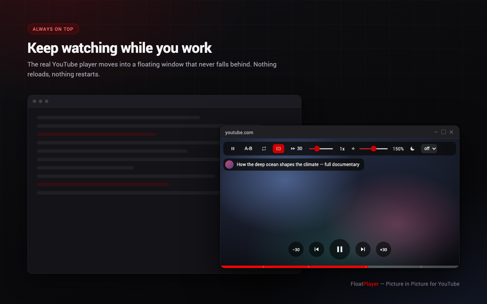
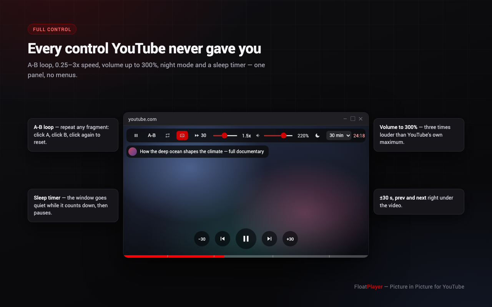
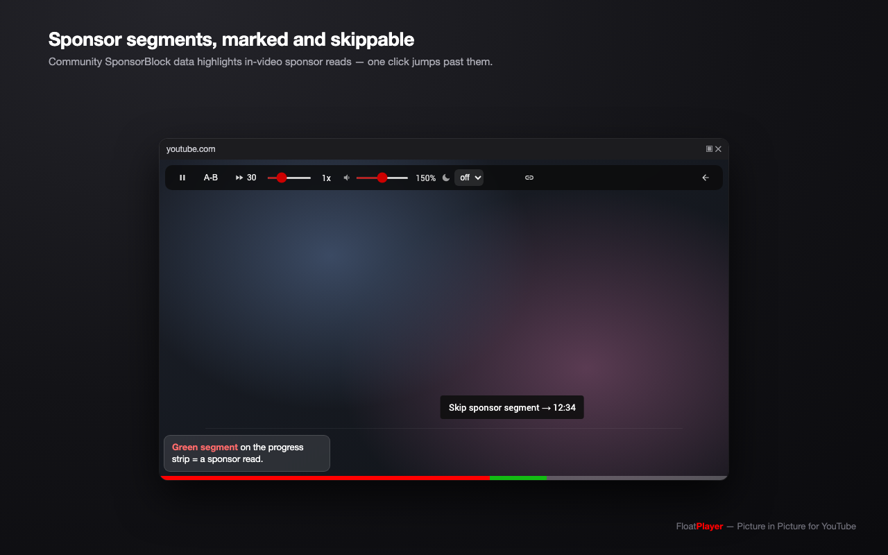
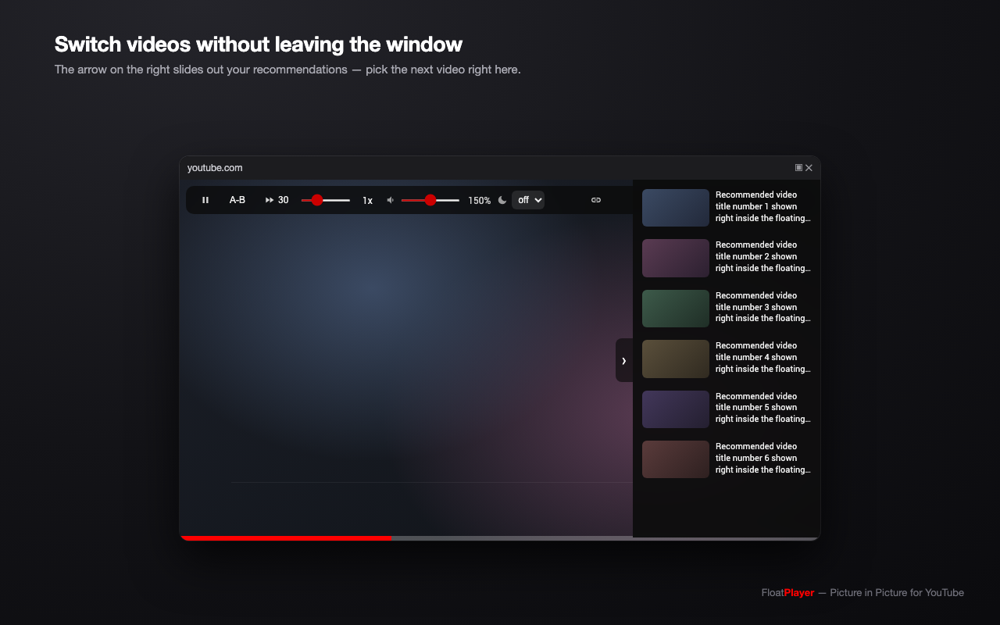
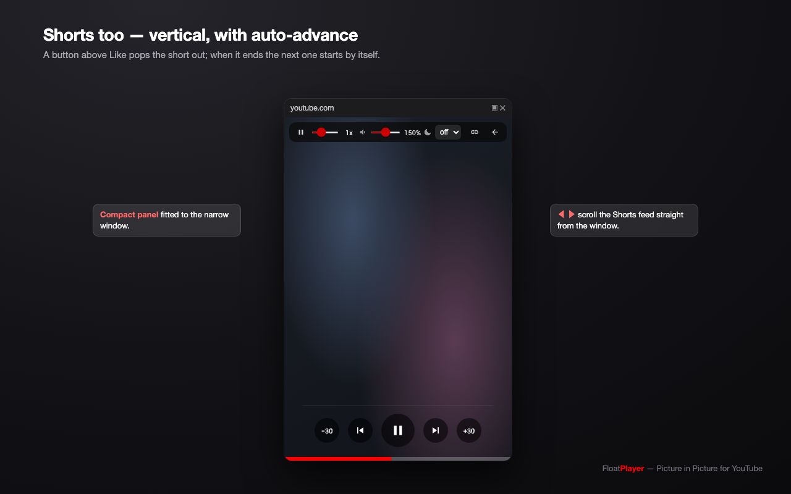
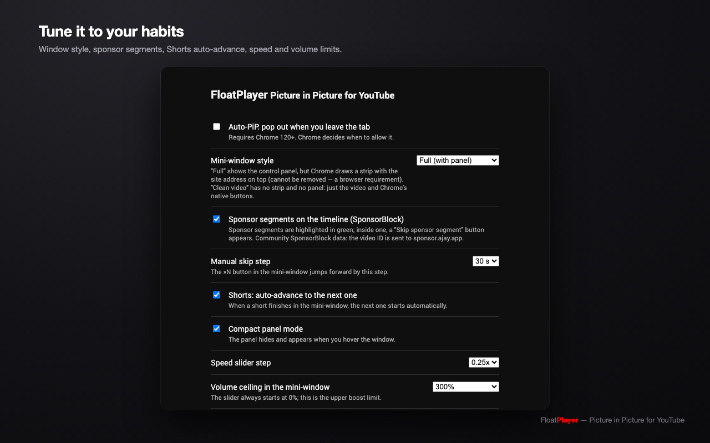

A Chrome extension that pops the real YouTube player into an always-on-top window — with A-B loop, 0.25–3x speed, 0–300% volume, a sleep timer, sponsor-segment skipping and Shorts auto-advance. Playback never restarts.

Everything lives in one hover panel, one button row and one progress strip.
Document Picture-in-Picture gives a genuine OS-level window — not a popup that falls behind your editor.
The actual YouTube player is moved, so your account, history, quality and captions carry over without a restart.
Shopping overlays, cards, endscreens and descriptions are hidden by a whitelist — the window shows the video and nothing else.
Mark two points and repeat a fragment — for language practice, music, tutorials or technique review.
Web Audio gain goes quieter than YouTube's zero and far louder than its maximum for quiet recordings.
Presets or your own value up to 12 hours. While it counts down the interface hides itself completely.
Community SponsorBlock data marks in-video sponsor reads in green; one click jumps past them.
A button above Like pops a short into a vertical window; the next one starts automatically when it ends.
The window opens at the video's aspect ratio and snaps back after resizing — no black margins, no stray UI.
Regular videos, Shorts and the options page.




Rebind them at chrome://extensions/shortcuts.
| Where | Keys | Action |
|---|---|---|
| Any Chrome window | Alt+P (⌥P on Mac) | Toggle the mini-window |
| Any Chrome window | Alt+K / J / L | Pause / −5 s / +5 s |
| Inside the window | Space or K | Pause |
| Inside the window | ← / → | ±5 s |
| Inside the window | M | Mute |
| On the video | Click left / center / right third | −10 s / pause / +10 s |
Everything optional is a switch, nothing is forced on you.

| Option | Values |
|---|---|
| Mini-window style | Full (with panels) · Clean video (frameless native PiP) |
| Auto-PiP when leaving the tab | on / off (Chrome 120+) |
| Sponsor segments (SponsorBlock) | on / off |
| Manual skip step | 15 / 30 / 45 / 60 / 90 s |
| Shorts auto-advance | on / off |
| Compact panel mode | on / off |
| Speed slider step | 0.1x / 0.25x / 0.5x |
| Volume ceiling | 100% / 200% / 300% |
| Audio preset | Normal / Night / Voice / Bass |
| Interface language | 14 languages, matched to your browser |
FloatPlayer is free, has no ads and collects nothing. If it saves you time, you can send some ETH.
0x77777da54702AC8789D53fc7cC6201C29a1A88C4
Always verify the address on this page before sending — never trust one pasted to you in a message.